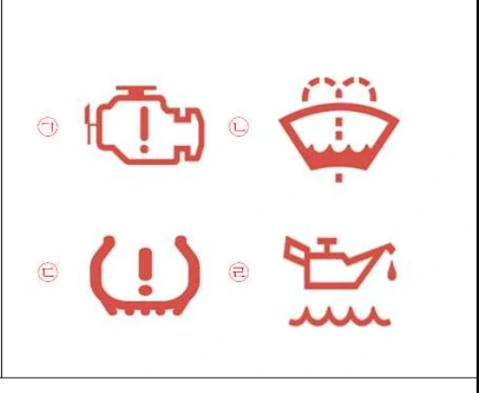

907. Biểu hiện sai của “Đèn cảnh báo xe” là gì?

- ①Hình ㉠ là đèn cảnh báo thông báo về sự cố của thiết bị điều khiển động cơ và hệ thống kiểm soát khí thải cùng các cảm biến liên quan.
- ②Hình ㉡ là đèn cảnh báo thông báo cần bổ sung dung dịch rửa kính khi thiếu.
- ③Hình ㉢ là đèn cảnh báo thông báo cần bơm áp suất lốp theo tiêu chuẩn hoặc tình trạng hư hỏng lốp khi áp suất lốp thấp.
- ④Hình ㉣ là đèn cảnh báo liên quan đến chức năng phanh ABS. ㉠ ㉡ ㉢ ㉣
Xem đáp án
Đáp án
④ Hình ㉣ là đèn cảnh báo liên quan đến chức năng phanh ABS. ㉠ ㉡ ㉢ ㉣
Căn cứ
<Phụ lục 2> liên quan đến Điều 13, Đoạn 4 và 15 của Quy tắc vận hành và tiêu chuẩn ô tô và phụ tùng ô tô ④ Đèn cảnh báo thiếu dầu động cơ
Phần căn cứ là bản dịch máy để tham khảo.